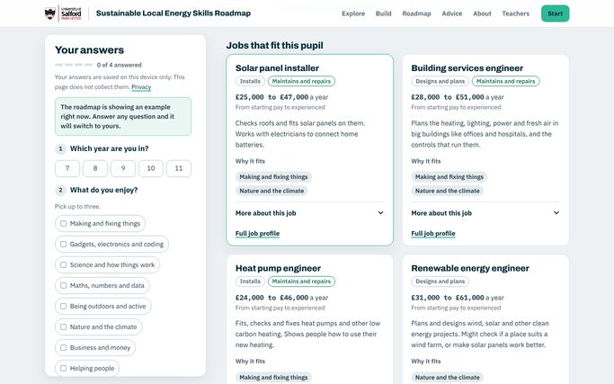
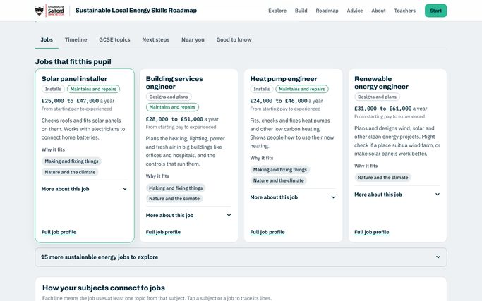
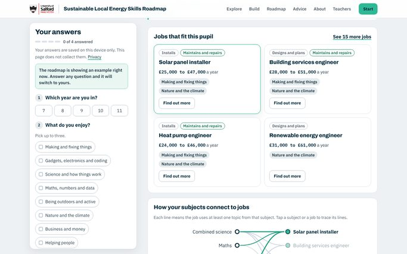
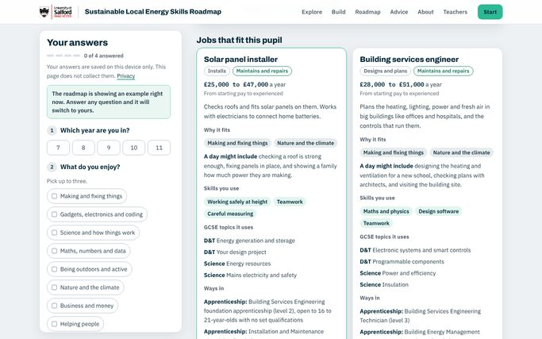

Preview, not live
Three layouts to compare
Each option keeps every part of the tool: the home picture, the four questions, the roadmap, the PDF and email, and dark mode. They differ in how much you see at once. Each page has a yellow bar at the top to switch between them.
Page length on a laptop with the example roadmap: the current page is about 9,300 pixels tall; each option is about half that. On a phone, the current page is about 15,300 pixels tall, and each option is about half that.
-

A. Calm
The same page in the same order, with less on show at once.
- Job cards show the pay, what the job is, and why it fits. The rest is under “More about this job”.
- The six parts after the jobs (timeline, GCSE topics, next steps, near you, good to know, words) fold into one list, each with a one-line summary.
- The home panel shows the subjects and jobs; the detail is one tap away.
About 5,000 pixels on a laptop.
Open option A -

B. Step by step
A guided route: explore, answer, then read your roadmap one part at a time.
- A centred welcome with “How it works” in three steps.
- The home picture full width, with its panel beside it.
- One question at a time on every screen, in a centred card.
- The roadmap in six tabs, so only one part shows at a time.
About 4,900 pixels on a laptop.
Open option B -

C. At a glance
A bold welcome, and the whole roadmap on one screen of cards.
- A dark blue welcome band, so the headline and the picture stand out.
- Your top jobs as small cards, with key dates, next steps, topics, near you, good to know and words beside them.
- Each card opens its full detail in a panel at the side (on phones, a sheet from the bottom).
About 4,800 pixels on a laptop.
Open option C -

The current page
For comparison: the page as it is live now.
About 9,300 pixels on a laptop.
Open the current page